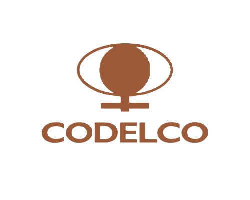
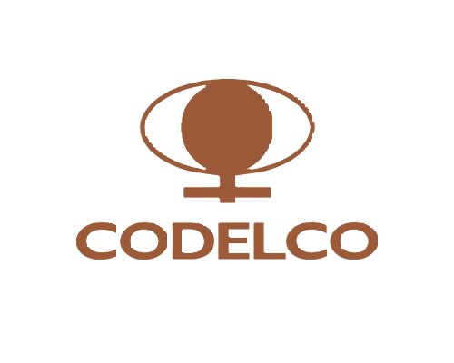

Manet orienta sus servicios a organizaciones en los que el abastecimiento es un proceso estrategico y determinante en los resultados.Supplynet apoya los procesos de abastecimientos en forma integral desarrollando relaciones de largo plazo que apuntan a mejorar sus procesos en forma verificable.
Entre los clientes en los que los equipos de Manet han prestado servicios secuentan las áreas de abastecimiento y contratos de compañias tales como: CODELCO, AMSA, PUCOBRE, CMPC, SIERRA GORDA, ANGLO AMERICAN, KINROSS.
Es clave en el servicio la experiencia y capacidades de los equipos que desarrollan los servicios, así como el enfoque de procesos y la supervisión que se realice sobre éstos. Se busca aportar mejores prácticas y asegurar los resultados para el cliente.

 
